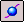

Connect curves with BlueDot in Electrical Routing (ordered modeling)
Note:
BlueDots are only available in the ordered environment.
-
Choose Home tab→Paths group→BlueDot

. -
Select an endpoint on the first curve.
-
Select an endpoint on the second curve.
-
Continue to the select the endpoints until the appropriate curves are connected
Tip:
-
You can edit the position of a BlueDot using the Select Tool and the BlueDot Edit command bar.
-
You can use the OrientXpres control to limit the edit to an axis or plane you select.